ID : 2855
概要
円形トラッキングとは
ターンテーブルで運ばれてくるワークを、ターンテーブルを停止せずにロボットが把持することができる機能のことです。
円形トラッキングには以下の2種類があります。
- センサトラッキング
- 任意の間隔で同一円弧上を運ばれてくるワークをピックアップするような場合に使用します。
光電センサの前をワークが横切った際、信号をトリガにする方式です。
光電センサの前をワークが横切った際、ワークの位置を事前に登録し、トリガが入る度にそのワークがどこに流れてくるかを逐次計算してロボットに追従させます。 - ビジョントラッキング
- 任意の位置・姿勢で置かれて運ばれてくるワークをピックアップする場合に使用します。
ビジョンセンサが画像認識でワークを検出した際、信号をトリガにする方式です。
トリガが入る度に画像認識で検出したワークの位置・姿勢を登録し、そのワークがどこに流れてくるかを逐次計算してロボットに追従させます。

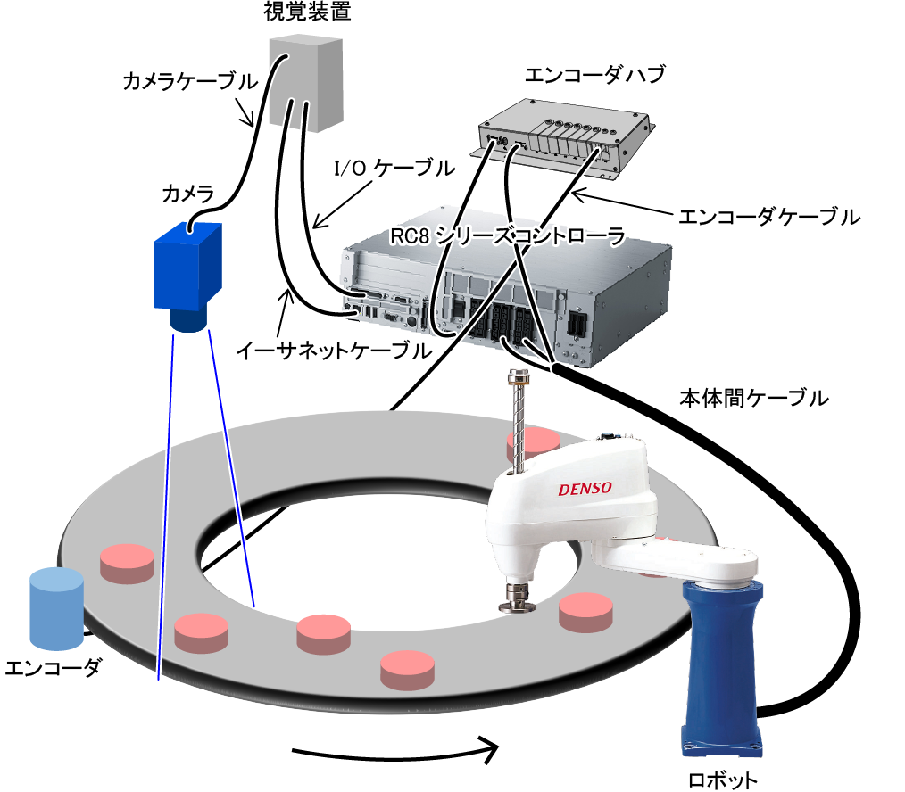
センサトラッキングとビジョントラッキング機能は、協調機能、力制御と一緒には使用できません。
排他制御との同時使用はVer.2.8.*以降で可能です。
円形トラッキング機能の有効化
円形トラッキング機能が有効になっているか、無効になっているかの状態を指す単語を以下のように定義します。
- トラッキングモード
- 円形トラッキングの機能が有効になっている状態を指します。
この状態の時に、専用動作コマンド（「TrackAbsApproach」、「TrackAbsMove」、「TrackApproach」、「TrackDepart」、「TrackMove」、「TrackDraw」）を呼び出すことによってターンテーブルの移動によって動的に変化する目標位置に対してロボットを動作させることが可能になります。
- 非トラッキングモード (通常動作モード)
- 円形トラッキングの機能が無効になっている状態を指します。コントローラが起動した時の初期状態です。
動作コマンド（「Approach」、「Depart」、「Move」等）を使用して、静止した目標位置に対してロボットを動作させます。
トラッキングモードの切り換えは、専用のコマンド（「TrackStart」、「TrackStop」）を使用して行います。
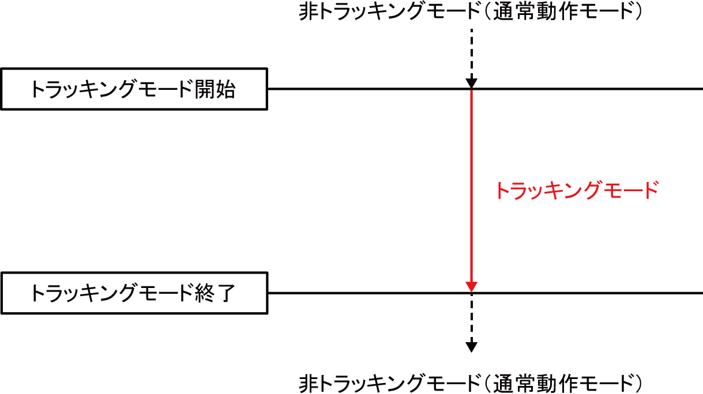
トラッキングモード中のロボット動作
トラッキングモード中は、専用の動作コマンド（「TrackAbsApproach」、「TrackAbsMove」、「TrackApproach」、「TrackDepart」、「TrackMove」、「TrackDraw」）を使用して動作を指示します。
トラッキングモード中に一度でも上記の専用動作コマンドを実行すると、ロボットはそれ以降何の操作をしなくても、ターンテーブルとの等速状態を維持するために、ターンテーブル方向に自動的に移動し続けますので注意してください。
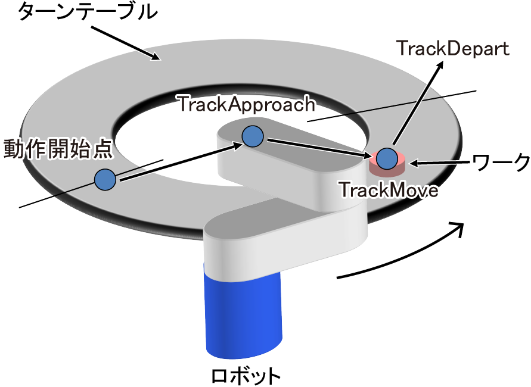
トラッキングモード中のロボットの動作状態を指す単語を、以下のように定義します。
- 追従動作
- ターンテーブル上のワークに追いつくためのロボット動作のことを指します。
ターンテーブル上のワークと等速になるまで加速し、追いついた後はターンテーブルと並走します。
- 作業動作
- ターンテーブルに追従する動き(追従動作)と同時に行う、ロボットが作業を行うための動作のことを指します。
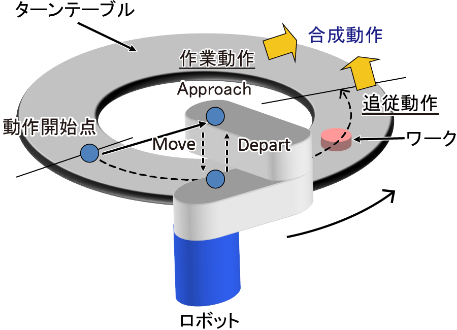
トラッキングモード中のロボット動作は、この「追従動作」と「作業動作」の合成動作になります。
例えば、「TrackApproach」動作は、追従動作と作業動作である「Approach」動作との合成動作になります。
手先の姿勢制御の種類
円形トラッキングでは、トラッキングモード中の手先の姿勢制御が2種類あります。
ターンテーブルの回転にあわせて、手先の姿勢を回転させる。
下図のように、ターンテーブルの回転にあわせて、手先の姿勢を回転させながら動作します。
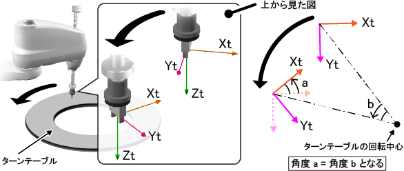
姿勢を回転させる際に、基準となる姿勢は、動作コマンドによって位異なります。
-
「TrackApproach」、「TrackMove」の場合
基準となる姿勢は、トラッキング範囲上流限界位置の姿勢です。
トラッキング範囲上流限界位置は、トラッキング範囲上流限界を設定するために、お客様が教示する位置です。
実際の動作では、トラッキング範囲上流限界から、ロボットが追従したところまでの角度分、上記の基準の姿勢を回転させながら動作します。
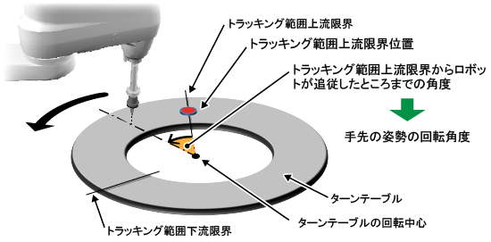
-
「TrackAbsApproach」、「TrackAbsMove」の場合
「TrackAbsApproach」では、基準の姿勢は、第2引数の基準位置で指定した位置の姿勢です。
「TrackAbsMove」では、基準の姿勢は、第2引数の目標位置で指定した位置の姿勢です。
実際の動作では、動作コマンド(「TrackAbsApproach」または「TrackAbsMove」)の実行開始時から、ロボットが追従した時点までのターンテーブルの回転角度分、上記の基準の姿勢を回転させながら動作します。
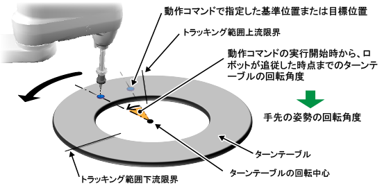
-
「TrackDepart」、「TrackDraw」の場合
基準となる姿勢は、動作コマンド(「TrackDepart」または「TrackDraw」)の実行を開始したときの位置の姿勢です。
実際の動作では、動作コマンド(「TrackDepart」または「TrackDraw」)の実行開始時から、ロボットが追従した時点までのターンテーブルの回転角度分、上記の基準の姿勢を回転させながら動作します。
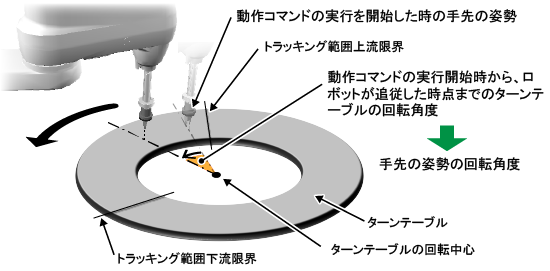
手先の姿勢を一定に保つ。
下図のように、ターンテーブルの回転角度に関わらず、手先の姿勢を一定に保ちながら動作します。
ただし、この制御方法は、ロボットコントローラのソフトウェアバージョンが、Ver.2.8.0以上で使用可能です。
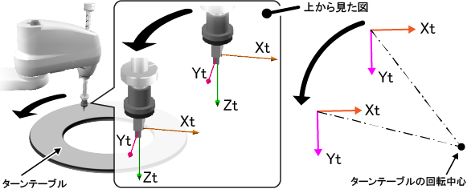
一定に保つ対象となる手先の姿勢は、動作コマンドによって異なります。下記の表を参照してください。
| コマンド | 一定に保つ対象となる手先の姿勢 |
|---|---|
| TrackAbsApproach | 指定項目の"基準位置"で指定した位置の姿勢 |
| TrackApproach | |
| TrackAbsMove | 指定項目の"目標位置"で指定した位置の姿勢 |
| TrackMove | |
| TrackDepart | 現在位置の姿勢 |
| TrackDraw |
手先の姿勢制御の指定方法
手先の姿勢制御は、TrackStartコマンドで指定します。詳細はTrackStartコマンドを参照してください。
追従動作の範囲
トラッキングモード中に、一度でも専用の動作コマンド（「TrackAbsApproach」、「TrackAbsMove」、「TrackApproach」、「TrackDepart」、「TrackMove」、「TrackDraw」）を実行すると、ロボットはそれ以降、何の操作をしなくてもターンテーブルとの等速状態を維持するために、ターンテーブル方向に自動的に移動し続けます。
RC8シリーズの円形トラッキングでは、ロボットがターンテーブルに追従する範囲を明確化するために、ターンテーブル上の領域に対する以下の概念を設けています。
- トラッキング範囲
- ロボットが、追従動作を行うことができるターンテーブル上の範囲のことです。
ワークが運ばれてくる側（上流）にある上流限界と、運ばれていく側（下流）にある下流限界で制限されています。
複数台のロボットを使用する場合は、ロボット毎にトラッキング範囲を設定します。
- トラッキング範囲上流限界 (上流限界)
- ロボットが追従動作を開始することのできる上流側の位置です。
ロボットアームが届く位置である必要があります。
- トラッキング範囲下流限界 (下流限界)
- ロボットが追従動作をやめ、減速を開始する下流側の位置です。
ロボットアームが届く位置である必要があります。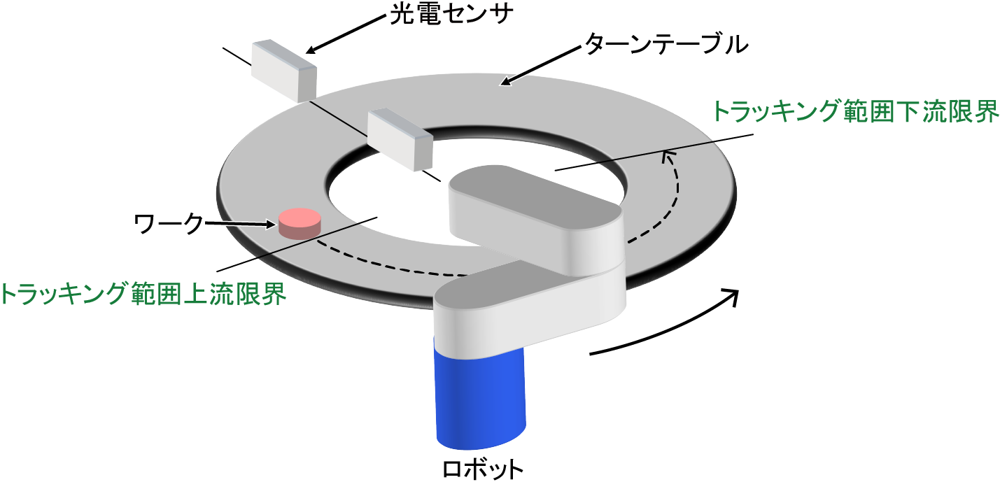
複数台ロボットでの円形トラッキング
RC8シリーズでは1台のターンテーブルに対し、複数台のロボットを使って円形トラッキングを行うことができます。
ターンテーブルの上流と下流で作業領域を分割し、それぞれ別々のロボットで作業させたい場合などに使用します。
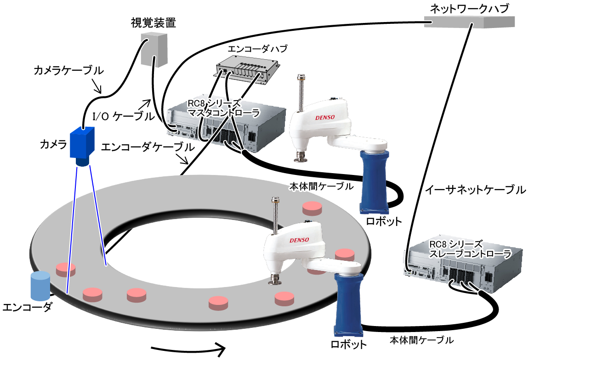
複数台のロボットで円形トラッキングを行う場合、ロボットコントローラごとに以下の2つの役割を割り当てます。
- マスタコントローラ
- センサやビジョンセンサがワークを検出した際の信号を受信し、ワークの位置情報の取り込みを行うコントローラです。
複数あるコントローラの中で1台だけに役割を割り当てます。自分自身で円形トラッキングを行うと同時に、他のコントローラに対してどのワークをトラッキングするかを指示する役割を持ちます。 - スレーブコントローラ
- マスタコントローラ以外のコントローラは全てこの役割になります。
マスタコントローラからイーサネット通信でトラッキングの対象となるワークのデータを受け取り、円形トラッキングを行います。
ID : 2855